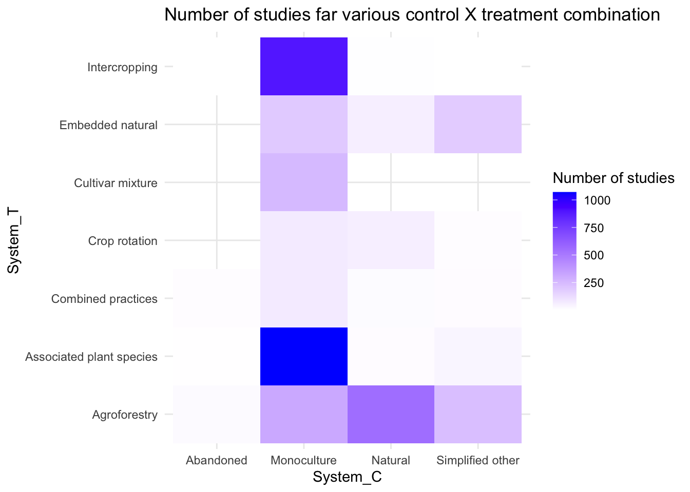
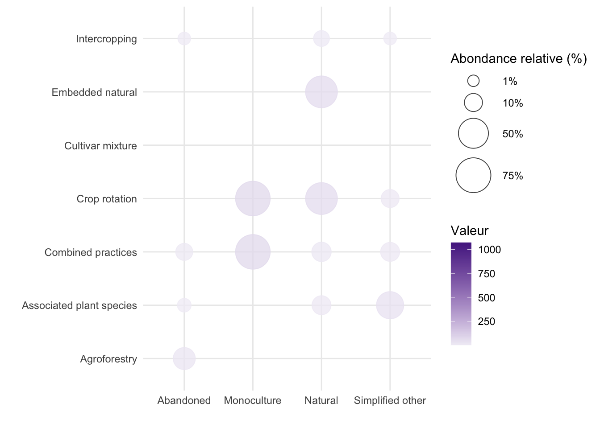

Chapter 5 2D Analyses for Meta-analyses and Evidence Maps
Two-dimensional (2-D) analyses are essential tools in meta-analyses and evidence maps, allowing researchers to explore relationships between variables, detect patterns, and effectively summarize complex data. These techniques visualize interactions and distributions across two variables, providing a structured way to present findings. From contingency tables that organize categorical data to heatmaps that reveal patterns of concentration, 2-D visualizations are highly versatile and can accommodate both qualitative and quantitative information.
This chapter presents key 2-D analytical techniques—including contingency tables, heatmaps, and interactive tables—that are particularly useful in meta-analytic contexts. We will discuss when to use each approach, provide practical examples using R, and highlight their value for synthesizing and interpreting research evidence.
5.1 Key 2-D Analysis Techniques
Contingency Tables: Contingency tables, also known as cross-tabulations, summarize the distribution of two categorical variables in a matrix format. They display the frequency or proportion of observations that fall into each category combination, helping to identify relationships or dependencies between variables. Use Case: Useful for summarizing the types of interventions applied across different farm types or regions, or for examining the association between two categorical outcomes (e.g., intervention success vs. failure across different management practices).
Heatmaps: Heatmaps use color gradients to represent the values of a variable within a 2-D space, making it easy to spot high and low concentrations. In meta-analysis, heatmaps can visually summarize study characteristics, intervention effects, or evidence distribution across multiple dimensions. Use Case: Ideal for visualizing the intensity of evidence coverage (e.g., number of studies by region and intervention type) or effect sizes across multiple subcategories.
Interactive Tables : Interactive tables enable researchers to explore data dynamically by sorting, filtering, and aggregating information directly within the table. Tools like DT in R or pivot tables in Excel provide flexibility for engaging with complex datasets, facilitating deeper exploration and comparison of study characteristics. Use Case: Effective for summarizing large evidence databases where users need to explore specific subsets (e.g., interventions, regions, outcomes) without losing track of the broader dataset.
5.2 Practical Examples in R
To implement these 2-D analysis techniques in R, we recommend using packages such as tidyverse, tableone, gplots, and DT for creating contingency tables, heatmaps, and interactive tables. Below, we illustrate how to construct and interpret each of these visualizations using sample data.
5.2.1 Example 1: Creating a Simple Contingency Table
A contingency table helps summarize the frequency of two categorical variables. In this example, we cross-tabulate intervention type and region to identify patterns in research distribution.
# Load required libraries
library(tidyverse)
contingency <- Outcome %>%
group_by(System_C,System_T) %>%
count()
# Create contingency table
contingency_table <- table(Outcome$Crop_FAO_C, Outcome$System_C)
# Display as a data frame
as.data.frame.matrix(contingency_table)## Abandoned Monoculture
## 1 - CEREALS AND CEREAL PRODUCTS 0 841
## 10 - SPICES 0 8
## 11 - FODDER CROPS AND PRODUCTS 0 29
## 12 - STIMULANT CROPS AND DERIVED PRODUCTS 0 194
## 2 - ROOTS AND TUBERS AND DERIVED PRODUCTS 0 28
## 3 - SUGAR CROPS AND SWEETENERS AND DERIVED PRODUCTS 0 2
## 4 - PULSES AND DERIVED PRODUCTS 0 4
## 5 - NUTS AND DERIVED PRODUCTS 0 18
## 6 - OIL-BEARING CROPS AND DERIVED PRODUCTS 0 222
## 7 - VEGETABLES AND DERIVED PRODUCTS 0 560
## 8 - FRUITS AND DERIVED PRODUCTS 0 588
## 9 - FIBRES OF VEGETAL AND ANIMAL ORIGIN 0 305
## NA 25 0
## Other or nd 8 70
## Natural Simplified other
## 1 - CEREALS AND CEREAL PRODUCTS 0 55
## 10 - SPICES 0 0
## 11 - FODDER CROPS AND PRODUCTS 26 71
## 12 - STIMULANT CROPS AND DERIVED PRODUCTS 0 194
## 2 - ROOTS AND TUBERS AND DERIVED PRODUCTS 0 5
## 3 - SUGAR CROPS AND SWEETENERS AND DERIVED PRODUCTS 0 0
## 4 - PULSES AND DERIVED PRODUCTS 0 0
## 5 - NUTS AND DERIVED PRODUCTS 0 0
## 6 - OIL-BEARING CROPS AND DERIVED PRODUCTS 0 33
## 7 - VEGETABLES AND DERIVED PRODUCTS 0 23
## 8 - FRUITS AND DERIVED PRODUCTS 0 60
## 9 - FIBRES OF VEGETAL AND ANIMAL ORIGIN 0 0
## NA 673 0
## Other or nd 0 345.2.2 Example 2: Generating a Heatmap
Heatmaps are excellent for visualizing interactions or intensities. This example uses a heatmap to display intervention effect sizes across different farm types.
# Load required libraries
library(ggplot2)
# Create sample data
heatmap_data <- Outcome %>%
group_by(System_C,System_T) %>%
count()
# Create heatmap
ggplot(heatmap_data, aes(x = System_C, y = System_T, fill = n)) +
geom_tile() +
scale_fill_gradient2(low = "red", high = "blue", mid = "white", midpoint = 0) +
theme_minimal() +
labs(title = "Number of studies far various control X treatment combination",
fill = "Number of studies")
5.2.3 Example 3: Bubble plots
Bubble plots are useful for showing interactions between different categories and the size of intervention effects. They encode information through the position, size, and color of the bubbles, making it easy to see patterns and differences. For example, a bubble plot can show intervention effects across various farm types, with larger bubbles indicating stronger effects. This helps highlight which interventions work best in different contexts.
# Load required libraries
library(ggplot2)
# Create sample data
bubble_data <- Outcome %>%
group_by(System_C,System_T) %>%
count()
# Créez un graphique à bulles
bubble_plot <- ggplot(bubble_data, aes(x = System_C, y = System_T)) +
geom_point(aes(size = n, fill = n, color = n), alpha = 0.75, shape = 21) +
# Échelle personnalisée pour la taille des bulles
scale_size_continuous(
limits = c(0.000001, 100), # Limites personnalisées
range = c(3, 15), # Plage de tailles personnalisées
breaks = c(1, 10, 50, 75), # Points de rupture pour les étiquettes de taille
labels = c("1%", "10%", "50%", "75%") # Étiquettes pour les tailles
) +
# Personnalisez les légendes
labs(
x = "",
y = "",
size = "Abondance relative (%)",
fill = "Valeur",
color = "Valeur"
) +
# Personnalisez les thèmes pour une meilleure lisibilité
theme_minimal() +
# Personnalisez la palette de couleurs
scale_fill_gradient(low = "#F1EEF6", high = "#54278F") +
scale_color_gradient(low = "#F1EEF6", high = "#54278F")
bubble_plot
5.2.4 Example 3: Building an Interactive Table
Interactive tables are useful for large datasets that require filtering or detailed inspection.
The DT package in R makes it easy to create tables that users can sort, search, and explore.
library(reactable)
library(dplyr)
library(webshot)
# Create a summary of grouped data
GROUP <- Outcome %>%
group_by(System_C) %>%
summarize(Number = n(), .groups = "drop")
react<-reactable(
GROUP,
details = function(index) {
# Filter the details for the selected group
details_data <- filter(Outcome, System_C == GROUP$System_C[index])
# Create a reactable for the detailed view
tbl <- reactable(details_data,
columns = list(
System_C = colDef(
style = function(value) {
if (value > 0) {
color <- "#008000"
} else if (value < 0) {
color <- "#e00000"
} else {
color <- "#777"
}
list(color = color, fontWeight = "bold")
}
)
))
htmltools::div(style = list(margin = "12px 45px"), tbl)
},
onClick = "expand", # Set click behavior to expand row details
rowStyle = list(cursor = "pointer") # Change cursor style to pointer for rows
)
#react